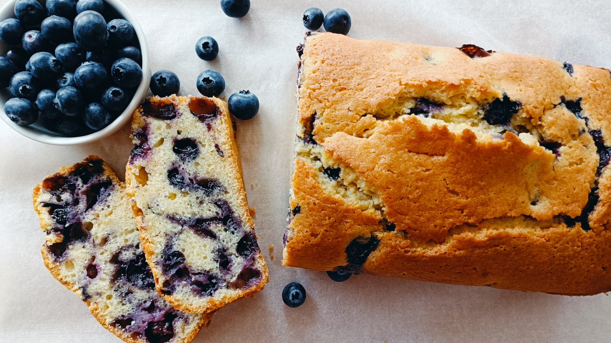

Pastel de Mora Azul
- Preparación: 15 min
- Cocción: 45 - 60 min
- Porciones: 1 pastel de 22 x 12 cm
INGREDIENTES
- 1 ½ tazas (200 g) de harina de todo uso mas una cucharada adicional (por separado)
- 1 cucharadita (5 g) de polvo para hornear
- ¼ cucharadita (1.5 g) de sal
- ¾ taza (170 g) de azúcar granulada
- ralladura de la piel de un limón
- ½ taza (120 g) de aceite vegetal o mantequilla sin sal
- 2 huevos
- 1 cucharadita de esencia de vainilla
- ½ taza (125 g) de leche
- 2 cucharadas (30 g) de jugo de limón
- 1 taza (180 g) de moras azules frescas desinfectadas
DESCRIPCIÓN
Un pastel fácil de preparar y delicioso. Tiene la combinación perfecta de sabor a mora azul y limón que lo hacen ser un gran acompañamiento para una buena taza de té o café.
INSTRUCCIONES
- Precalentar el horno a 180 °C (350 °F). El pastel se horneará en la rejilla intermedia del horno. Engrasar un molde para hornear pan de aproximadamente 23x13x7 cm (9x5x3 in).
- En un recipiente mediano, mezclar 1½ tazas harina, polvo para hornear y sal. Reservar. En un recipiente pequeño mezclar el azúcar con la ralladura de limón.
- En un recipiente grande batir el aceite o la mantequilla junto con la mezcla de azúcar y ralladura de limón hasta obtener una textura ligera y esponjosa. Agregar los huevos y la esencia de vainilla y seguir batiendo hasta que todo quede bien incorporado. Añadir la mitad de la mezla de harina y batir a velocidad baja. Posteriormente incorporar la leche, el jugo de limón y el resto de la harina y mezclar todo suavemente hasta obtener una combinación homogénea, pero sin batir demasiado.
- En un recipente pequeño, mezclar las moras azules con una cucharada de harina para evitar que se hundan en la masa al momento de hornearse. Luego volcarlas en la masa cuidadosamente.
- Verter la mezcla en el recipiente para hornear con la ayuda de una espátula para uniformizar la superficie.
- Hornear el pastel 45-60 minutos o hasta que la superficie se torne ligeramente dorada. El pastel debe quedar firme al tacto, y al insertar un palillo en la masa, debe salir limpio.
- Dejar enfriar completamente el pastel antes de servirlo.
Notas
- La receta original requiere mantequilla, que puede ser vegetal. Sin embargo, he sustituido la mantequilla por aceite de girasol y el resultado es también excelente. La leche también puede sustituirse por crema o yogurt.
- Esta receta es una ligera variación de "Lemon Blueberry Cake Recipe" del blog de Shiran Dickman.